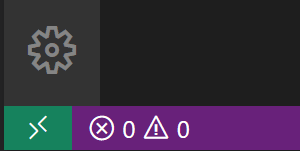
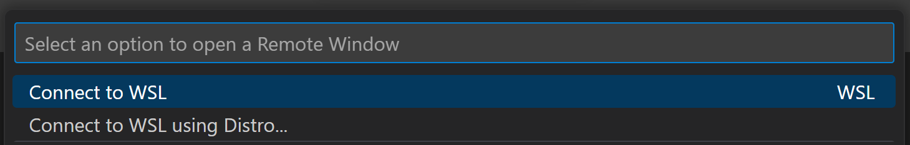
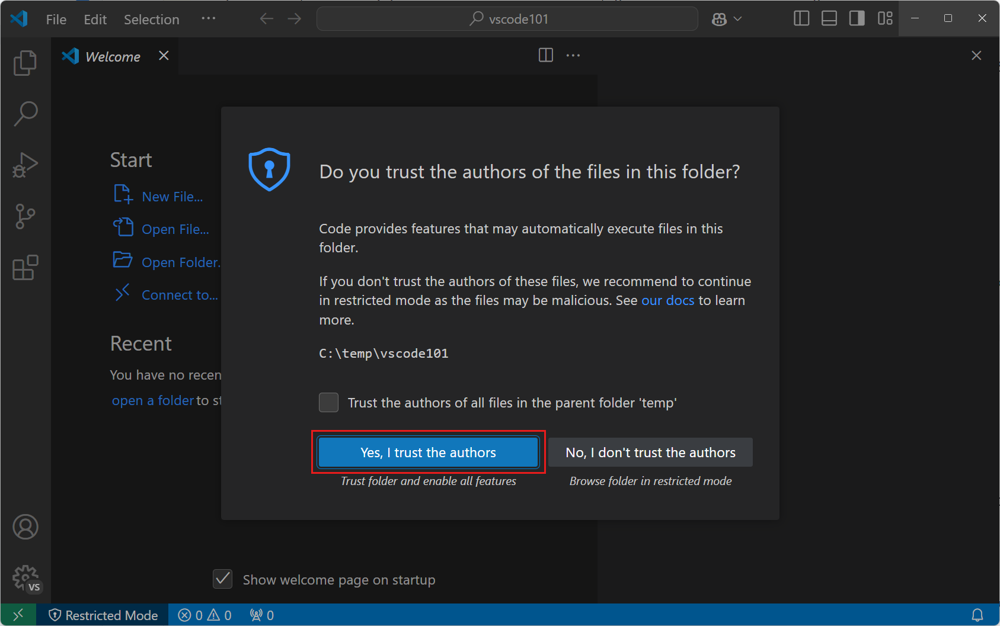
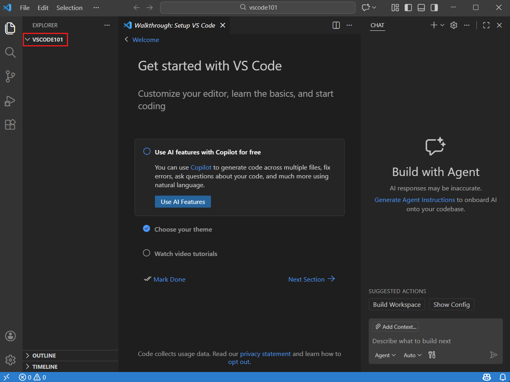

VS Code
In this tutorial you will get familiar with the functionality of VS Code. A powerful IDE as it is, VS Code has a lot of features. However, even if you know the basics it will get you a long way. This tutorial is heavily based on the official Tutorial: Get started with Visual Studio Code.
Start Up
Open Visual Studio Code. Then open a folder with File > Open Folder… or
Cmd+O. On Linux/WSL users, you will first have to start a remote WSL session. With the WSL extension installed, you will see a new Status bar item at the far left.
The Remote Status bar item can quickly show you in which context VS Code is running (local or remote) and clicking on the item will bring up the WSL extension commands.

Alternatively, WSL users can open their Linux terminal, create a directory in their Linux distribution file system, change their directory and open it in VS Code WSL remote with
code .:cd mkdir vscode101 cd vscode101 code .Note the
.in front ofcode. You need to tell VS Code what you are opening. Later, we will see that you can open any file or directory with this command.Select New Folder and create a new folder named
vscode101. Then select Select Folder (Open on macOS) to open the folder in VS Code.On the Workspace Trust dialog, select Yes, I trust the authors to enable all features in the workspace. If you do not see this dialog, then you probably have already opened this area before.
Workspace Trust lets you decide whether code in your project folder can be executed by VS Code. When you download code from the internet, you should first review it to make sure it’s safe to run. Get more info about Workspace Trust.

You should now see the Explorer view on the left, showing the name of the folder. Alongside terminal commands like
ls,tree, and other commands, you can use the Explorer view to view and manage the files and folders in your workspace.
When you open a folder in VS Code, VS Code can restore the UI state for that folder, such as the open files, the active view, and the layout of the editor. You can also configure settings that only apply to that folder, or define debug configurations. Get more info about workspaces.
VS Code now considers the folder you’ve opened a workspace. You can also use code . in your terminal, especially for WSL users, to start a WSL remote session.
Interface and Layout
- Sidebar
- Code editor
- Terminal
Settings
- Autosave
- Word wrap
- Theme customization
- GECS profile configuration
Searching and Replacing
- Search in a file
- Search across files
Shortcuts
- Layout:
Cmd+Bfor the Sidebar,Ctrl+`for the Terminal - Code editor:
Cmd+Dfor selecting the expression,Opt+Up/Downto move a line,Opt+Shift+Fto format a document - General:
Cmd+Shift+Pfor the Command Palette,Cmd+Pfor the File and Open Editors search bar